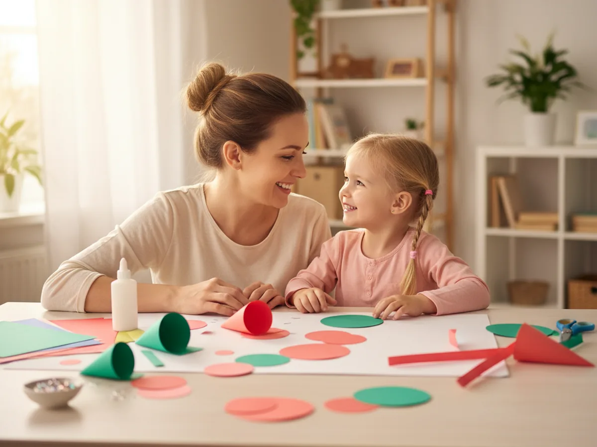
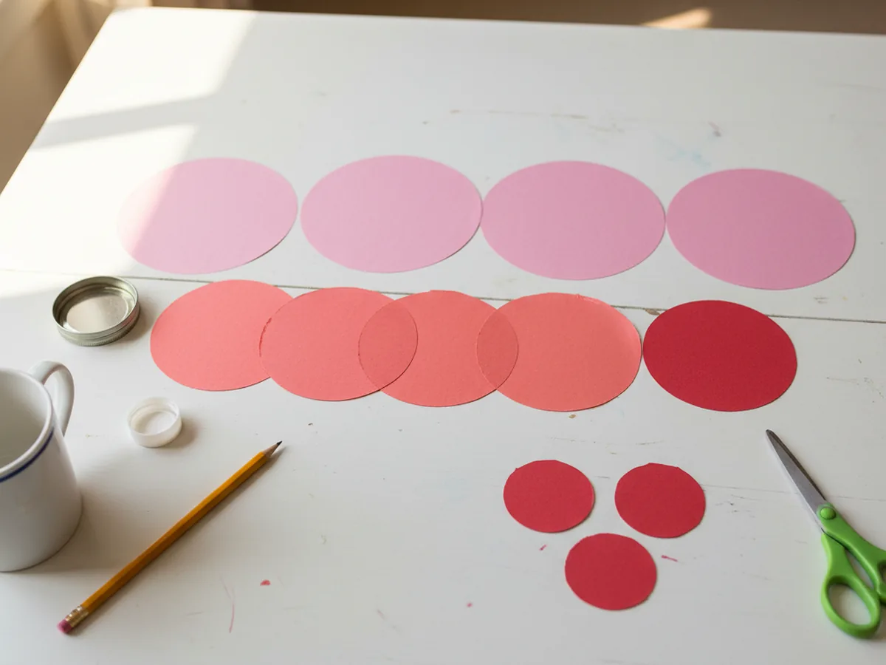
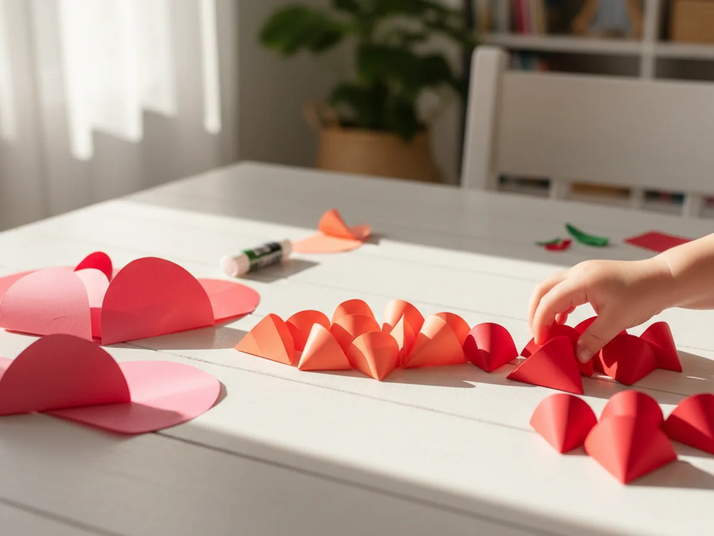
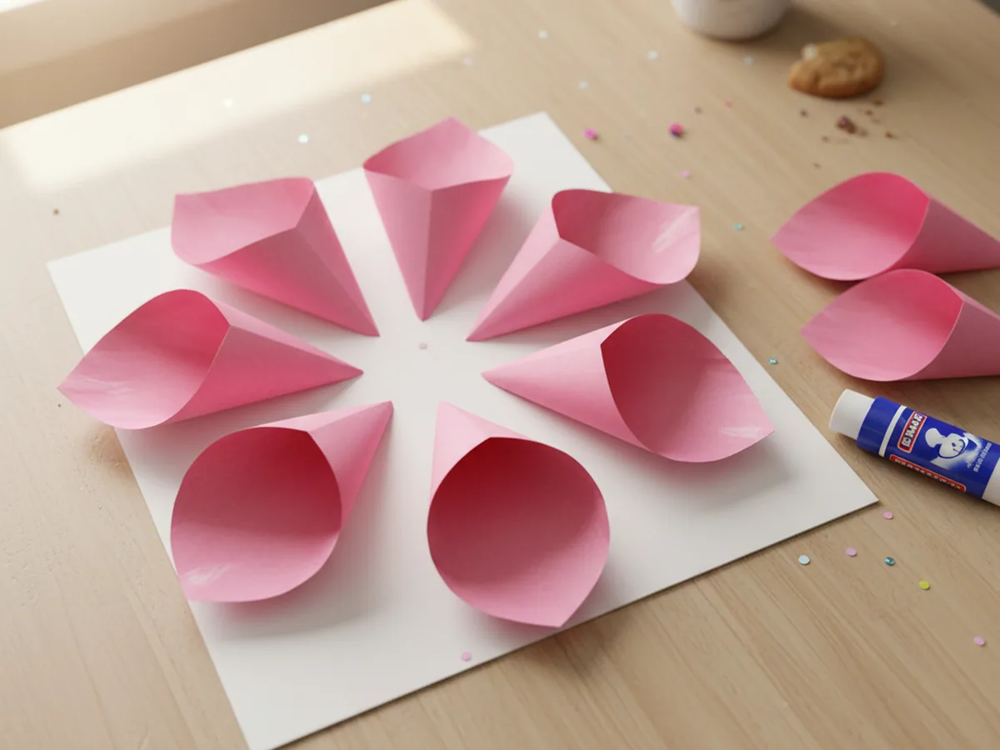
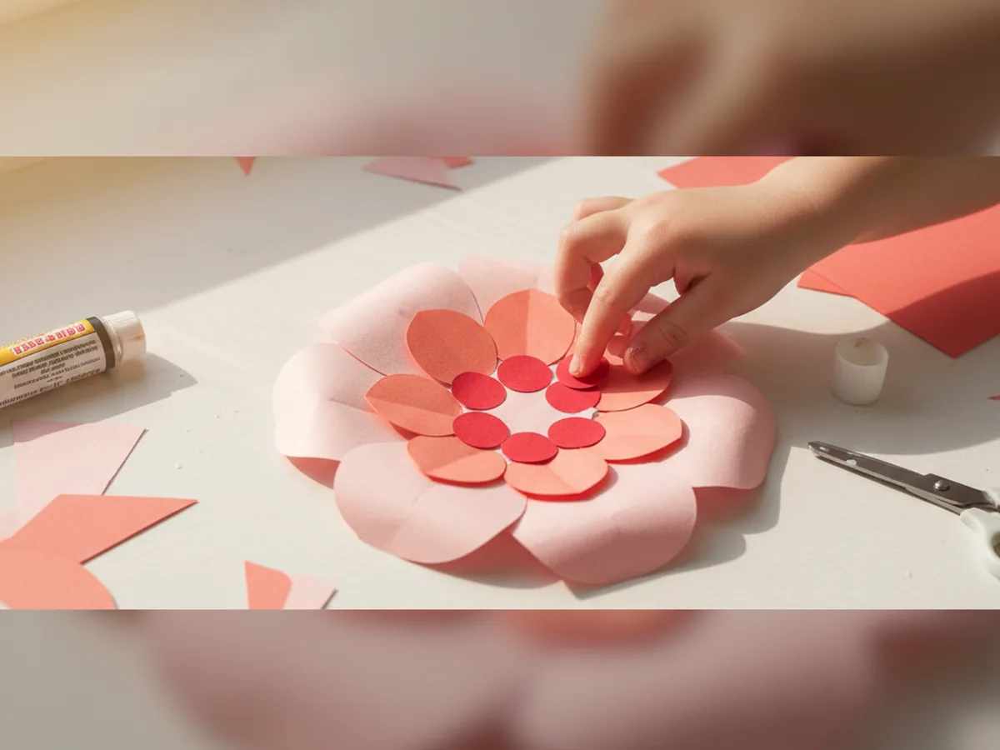
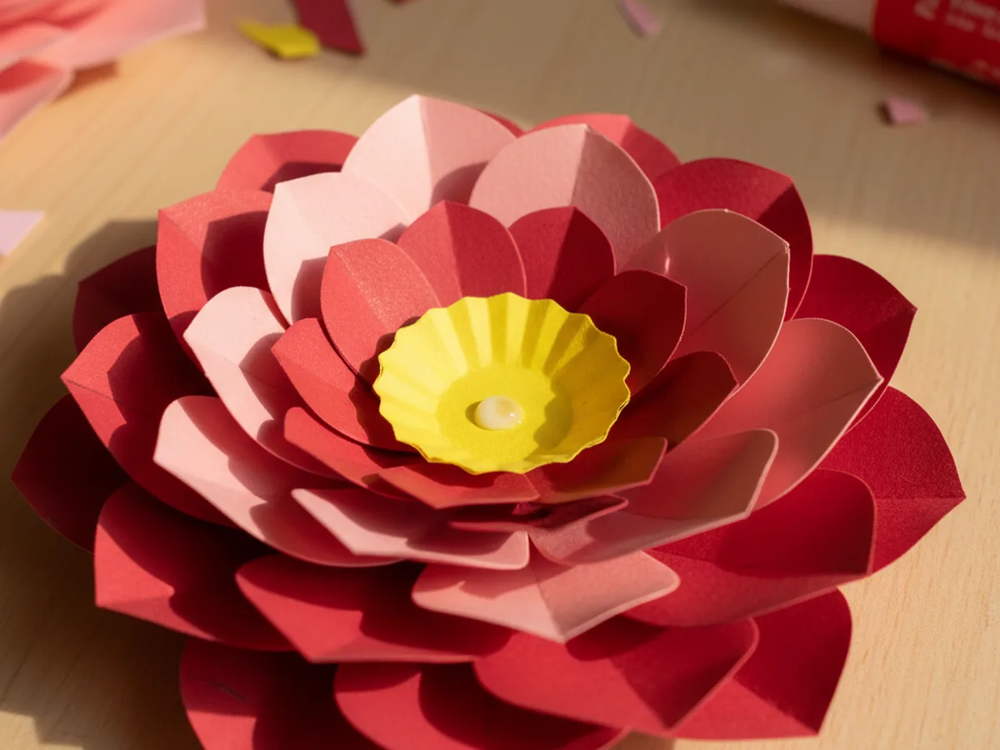
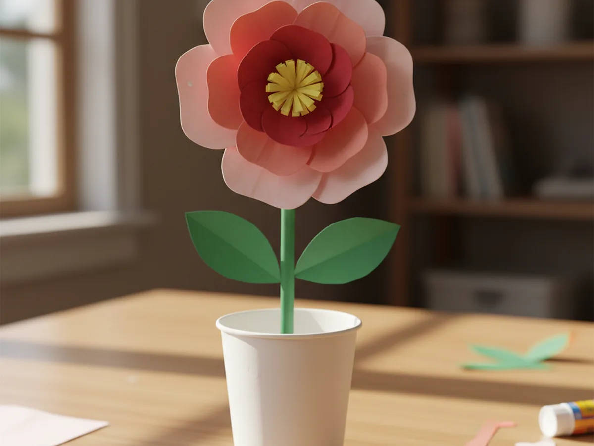

This gorgeous 3D paper craft looks like something from a boutique gift shop, but it is made entirely from paper circles and a glue stick. You layer colorful petals together, one ring at a time, and end up with a beautiful dimensional flower your child will want to display on their wall, give as a gift, or make again in a different color. It takes about 30 minutes, and the result is stunning. 🌸
The best part is how forgiving this project is. Circles do not need to be perfectly round, folds do not need to be razor sharp, and every slight imperfection just adds to the handmade charm. Children as young as 4 can do most of the steps themselves, and toddlers can join in for the folding and gluing with a little help.
Whether you make it as a spring decoration, a Mother's Day gift, or just a rainy afternoon activity, this is one of those crafts that feels special every single time.
Why Kids Love This Craft
There is something almost magical about watching a flat piece of paper transform into a three-dimensional shape. Kids are captivated by the process. With each ring of petals they add, the flower grows taller and fuller, and that visual progress keeps them completely engaged from start to finish. This 3D paper craft rewards patience in the most satisfying way.
It also builds real skills without feeling like practice. Tracing circles, cutting along curved lines, folding with intention, and gluing in a pattern all strengthen fine motor control, hand-eye coordination, and the ability to follow a sequence. These are exactly the skills young children need, wrapped up in something that simply feels like fun.
And when it is done? Every child holds up their flower with genuine pride. The color choices were theirs, the folding was theirs, and the result is something beautiful and three-dimensional that they built from scratch. That feeling of creative accomplishment is hard to beat.

What You'll Need
Here is everything you need for this 3D paper craft. It is a short, simple list with no specialty supplies required.
- Crayola Construction Paper, assorted colors for the petals, stem, and leaves.
- Fiskars Training Scissors for Kids, great for cutting smooth circles.
- Elmer's Washable Glue Sticks, for assembling all the paper layers cleanly.
- Glue Dots Craft Dots, optional but great for giving each petal a subtle extra lift.
- A pencil and round household objects (jar lids, cups, coins) for tracing circles of different sizes.
- A plain sheet of paper or cardstock as the flower base.
Step-by-Step Instructions
Follow these six steps and you will have a finished 3D paper flower before you know it. 🎨
Step 1: Trace and Cut Your Circles
You will need circles in three sizes. For the outer layer, trace 6 large circles about 4 inches across using a big jar lid or bowl. For the middle layer, trace 5 medium circles about 3 inches across using a mug or cup. For the inner layer, trace 4 small circles about 2 inches across using a bottle cap or large coin. Let your child pick the colors for each layer before cutting.
Cut all the circles out before moving to the next step. Having everything ready in advance makes the assembly much smoother and keeps the momentum going.

Step 2: Fold the Circles into Petals
Pick up each circle and fold it in half, pressing the crease firmly. Then fold it in half again to form a quarter-circle cone shape. This four-point petal is the building block of your entire 3D paper craft. Repeat for every circle before starting to glue. Working in batches makes the assembly stage much easier.
Show your child how to press the fold firmly with their thumb and run their fingernail along the crease for a crisp edge. It takes about a minute to fold all the circles, and kids usually find it oddly satisfying.

Step 3: Glue the Outer Petal Ring
Lay a plain sheet of paper flat on the table as your base. Arrange the 6 large petals in a ring with the pointed end of each petal facing the center, like a flower. Space them evenly so the ring looks full and balanced. Once you are happy with the arrangement, apply a line of glue stick along the flat back of each petal and press it firmly onto the base sheet. Hold each one for a few seconds.
Let the outer ring sit for a minute before moving on. This patience pays off. A secure outer ring makes every layer that follows much easier to build.

Step 4: Add the Inner Petal Layers
Now take your 5 medium petals and glue them in a second ring on top of the outer layer. Position them slightly inward and rotate the ring slightly so the medium petals nestle in the gaps between the large ones below. This staggered arrangement is what gives the flower its full, layered look. Press firmly and let them set for a moment.
Then do the same with your 4 small petals, placing them in a tight inner ring on top. By now the 3D paper craft should look beautifully dimensional. Step back and let your child admire the progress before finishing.

Step 5: Make and Attach the Flower Center
Cut a small circle about 1.5 inches across from a contrasting color. To give it texture, use a pencil to curl the edges outward: place the pencil near the edge of the circle and roll the paper around it gently. This creates a softly ruffled center that catches the eye. Alternatively, cut a thin strip of paper about 6 inches long, roll it tightly into a coil, and glue the end to hold the shape.
Apply a dot of glue to the flat bottom of your center and press it firmly into the middle of the innermost petal ring. Hold for ten seconds. This little center pulls the whole flower together and makes it look polished and complete.

Step 6: Create the Stem and Leaves
Cut a strip of green construction paper about 1 inch wide and 8 to 10 inches long. Roll it gently between your hands to give it a slight natural curve. Then cut two simple leaf shapes from the remaining green paper, each one about 2 to 3 inches long. Glue the stem to the center back of the flower, and attach one leaf on each side along the stem.
Flip the finished flower over and display it however you like. It can be propped in a vase, taped to a wall, tucked into a greeting card envelope, or simply stood up on a shelf. Your beautiful 3D paper flower craft is complete. ✂️

Variations to Try
Rainbow Gradient Flower: Choose one color family and arrange the petals from light to dark as you move from the outer to the inner layers. A light-to-deep pink flower or a soft-to-rich blue one looks incredibly elegant and is surprisingly easy to pull off.
Mini Flower Bouquet: Make three smaller flowers using slightly reduced circle sizes. Group them together and tuck their stems into a small paper cup or mason jar for a sweet handmade centerpiece that looks professionally made.
Greeting Card Topper: Skip the stem entirely and glue the finished flower directly onto the front of a folded cardstock card. It makes a beautiful handmade gift card for a birthday, Mother's Day, or just because.
More Crafts You'll Love
If your little one enjoyed this project, here are two more beautiful paper flower crafts to explore together.
Final Thoughts
This 3D paper craft is one of those projects that genuinely surprises people. It looks elaborate, but it comes together with nothing more than paper circles, scissors, and a glue stick. The layering process is calm and satisfying, the result is beautiful enough to display or gift, and the whole activity takes about 30 minutes from start to finish.
More than that, it is a lovely shared moment. Choosing colors together, folding side by side, watching the flower grow layer by layer. I hope you and your little one enjoy every single petal. 💐